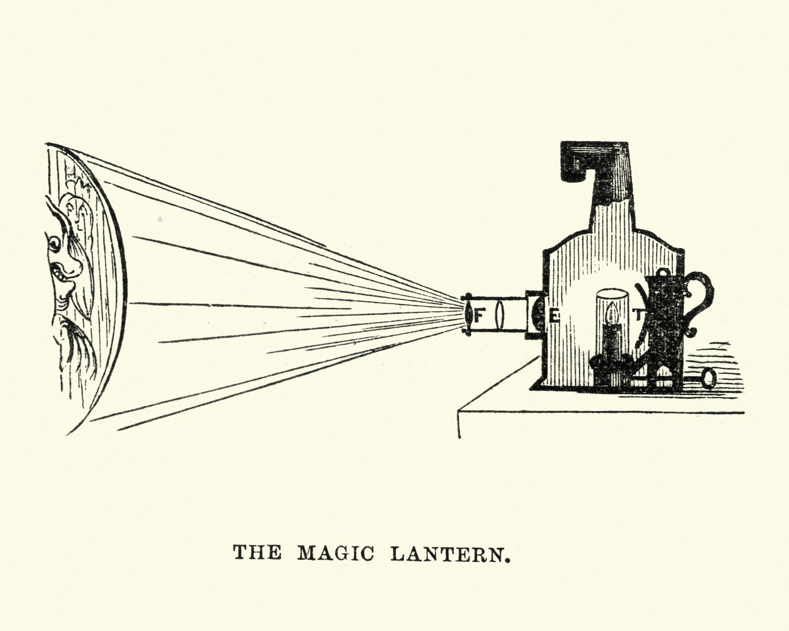
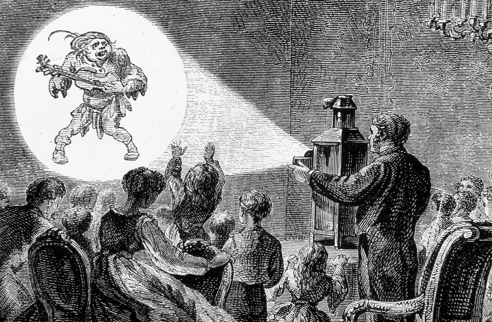

История анимации
Каждый день мы сталкиваемся с анимацией десятки, а иногда и сотни раз, даже не замечая этого. Мы открываем телефон, и иконки плавно реагируют на касание. Заказываем еду через приложение, где загрузка сопровождается небольшой анимацией. Смотрим рекламу в социальных сетях, заставки фильмов, видеоролики на YouTube, цифровые экраны в городе, интерактивные выставки или концерты с огромными LED-экранами.
Все эти совершенно разные примеры объединяет одно: движение используется как инструмент передачи информации. Именно этим занимается моушн-дизайн.
🔶 Моушн-дизайн (Motion Design, motion - движение, design - дизайн) - это создание графики, типографики и других визуальных элементов, которые оживают с помощью движения для передачи информации, эмоций или истории.
Моушн-дизайн невозможно назвать самостоятельным видом искусства. Скорее, это область, которая объединяет знания сразу из нескольких дисциплин. О концепции многосредовости мы будет говорить и с других дисциплинах, так что для нас важно это понимание. Во время работы над проектом моушн-дизайнер использует:
композицию из живописи;
цвет и типографику из графического дизайна;
драматургию из литературы;
монтаж из кинематографа;
звук из музыки;
принципы анимации;
современные цифровые технологии.
Именно поэтому хороший моушн-дизайнер постоянно изучает самые разные области. Все эти области мы будем охватывать в курсе. И не важно какой софт вы будете использовать. В своём курсе я делаю упор на After Effects потому что он позволят продемонстрировать все эти составляющие.
Зачем нам история?
На первый взгляд действительно кажется, что старые технологии давно остались в музеях. Но если внимательно посмотреть на современные проекты, становится понятно, что это совсем не так. Практически каждый способ создания движения, который был изобретён за последние двести лет, продолжает использоваться и сегодня.
- Покадровая анимация превратилась в цифровой frame-by-frame.
- Бумажная перекладка стала Puppet Tool в After Effects и современными системами риггинга.
- Ротоскопинг используется в композитинге, кино и даже современных AI-инструментах.
- Стоп-моушн по-прежнему снимают крупнейшие мировые студии.
- Трёхмерная анимация продолжает развивать идеи, появившиеся ещё в первых компьютерных исследованиях.
История анимации - это не история устаревших технологий. Это история появления новых способов создавать движения.
Каждый новый этап не отменял предыдущий, а лишь расширял набор инструментов Именно поэтому мы будем изучать историю не как последовательность дат и фамилий, а как эволюцию методов работы, многие из которых вы сами будете использовать уже во время этого курса. Перед тем как говорить об истории подробно, давайте посмотрим на пример.
Чтобы понять, почему сегодня существует столько способов создания движения, нужно вернуться почти на двести лет назад и посмотреть, с чего всё начиналось.
До кинематографа
Любая цифровая анимация, кино, видеоигры и даже LED-экраны состоят из отдельных неподвижных изображений, которые очень быстро сменяют друг друга. Движение возникает не внутри экрана, а в нашем восприятии. Чтобы понять, как появилась анимация, сначала нужно разобраться, почему человеческий мозг вообще способен видеть движение там, где его физически нет. На это влияют сразу несколько особенностей нашего зрения.
🔶 Персистенция зрения (Persistence of Vision) - это способность глаза на короткое время сохранять изображение после того, как оно исчезло.
Если быстро показать одно изображение, а затем сразу заменить его следующим, первое ещё на долю секунды «остаётся» в нашем восприятии. Благодаря этому последовательность отдельных кадров воспринимается как единое движение. Именно на этом принципе работают кино, телевидение и традиционная покадровая анимация.
Важно отметить, что современные исследования показывают: одной только персистенции зрения недостаточно, чтобы полностью объяснить иллюзию движения. Значительную роль играет работа мозга, который самостоятельно связывает отдельные изображения в непрерывное действие.
В начале XX века немецкий психолог Макс Вертгеймер обнаружил ещё один важный эффект.
🔶 Phi phenomenon (эффект кажущегося движения) - это особенность восприятия, при которой мозг воспринимает быстро сменяющиеся неподвижные изображения как одно непрерывное движение.
Самый простой пример можно увидеть на новогодней гирлянде или световой вывеске. Лампочки не двигаются, но если они загораются по очереди, нам кажется, что свет перемещается. Именно поэтому персонаж на экране выглядит живым, хотя на самом деле мы видим лишь последовательность отдельных кадров.
Волшебный фонарь
Одним из первых устройств, позволяющих показывать изображения большой аудитории, стал волшебный фонарь (Magic Lantern), появившийся в XVII веке. Он представлял собой проекционный аппарат, внутри которого находился источник света. Свет проходил через стеклянную пластину с нарисованным изображением и проецировал его на стену.
Само изображение ещё не двигалось, однако некоторые фонари позволяли использовать сразу несколько стеклянных пластин или перемещать их относительно друг друга. Благодаря этому можно было создавать простые анимационные эффекты: движение облаков, волн, призраков или человеческих фигур. Фактически это был первый шаг к появлению проекционных технологий, которыми мы пользуемся и сегодня.
 